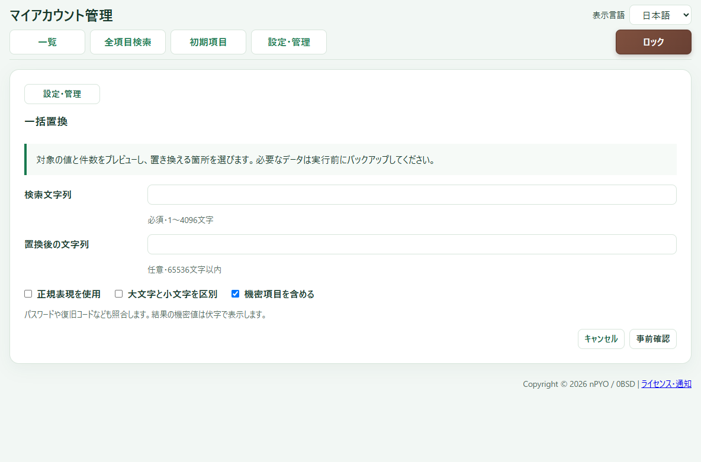
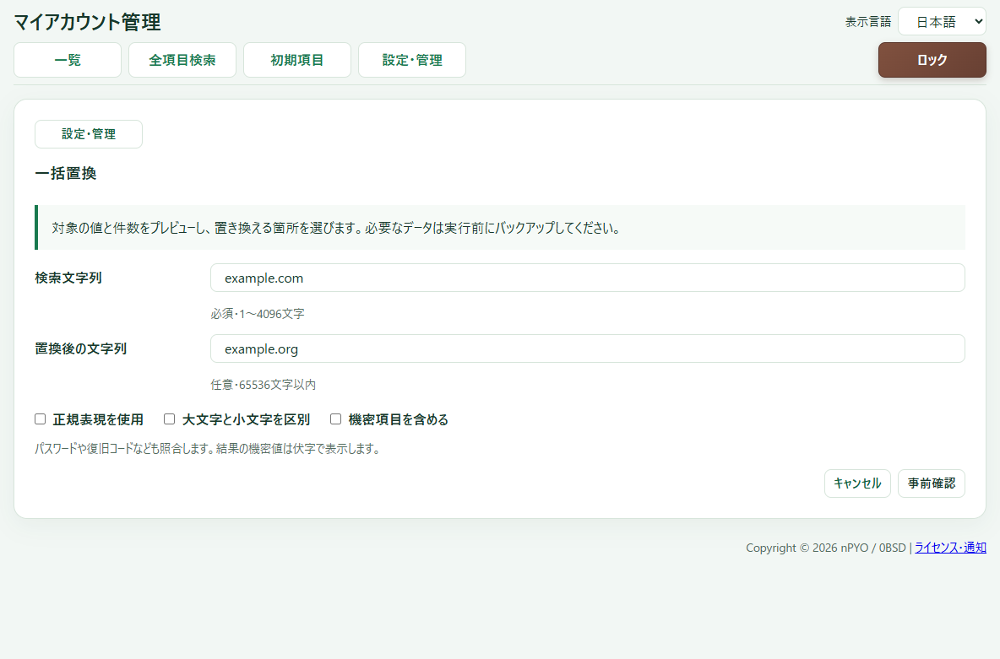
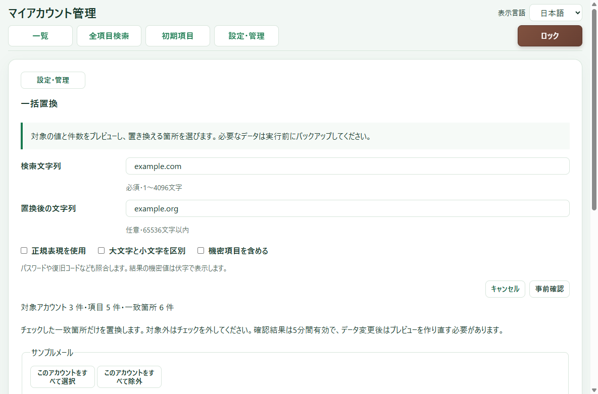
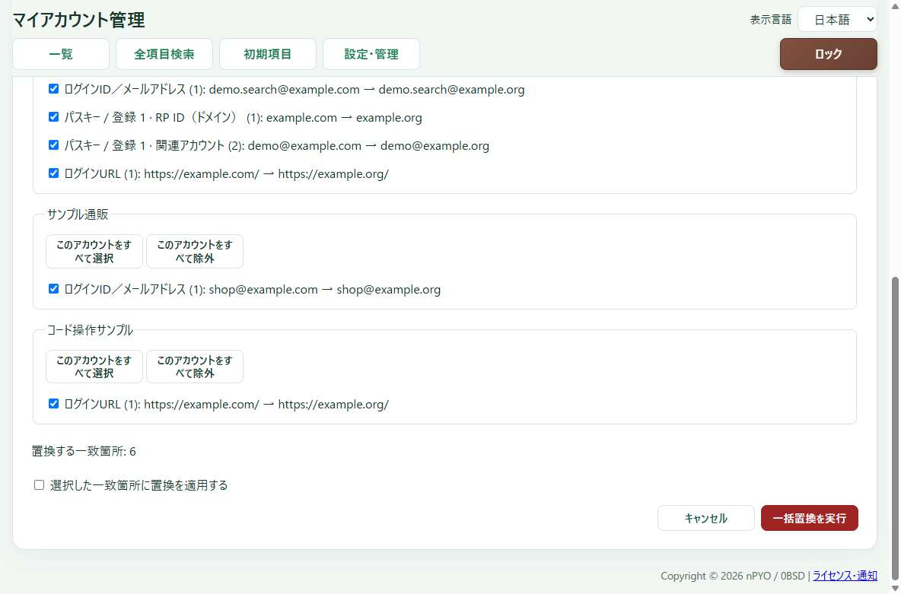
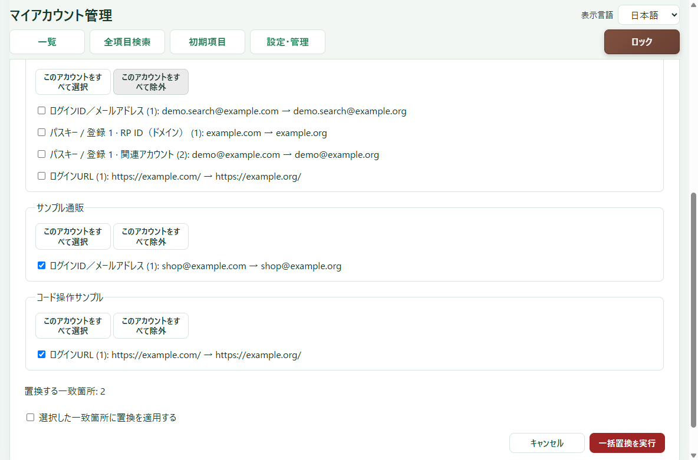
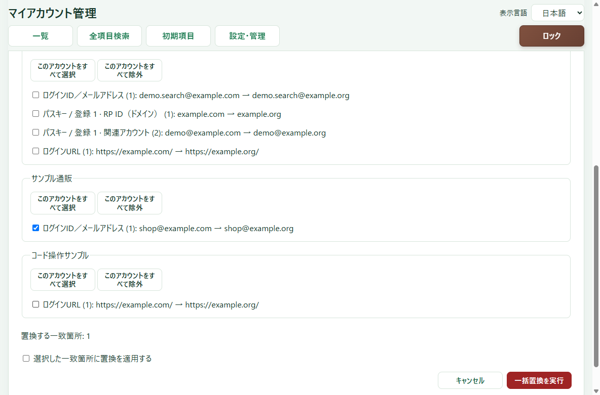
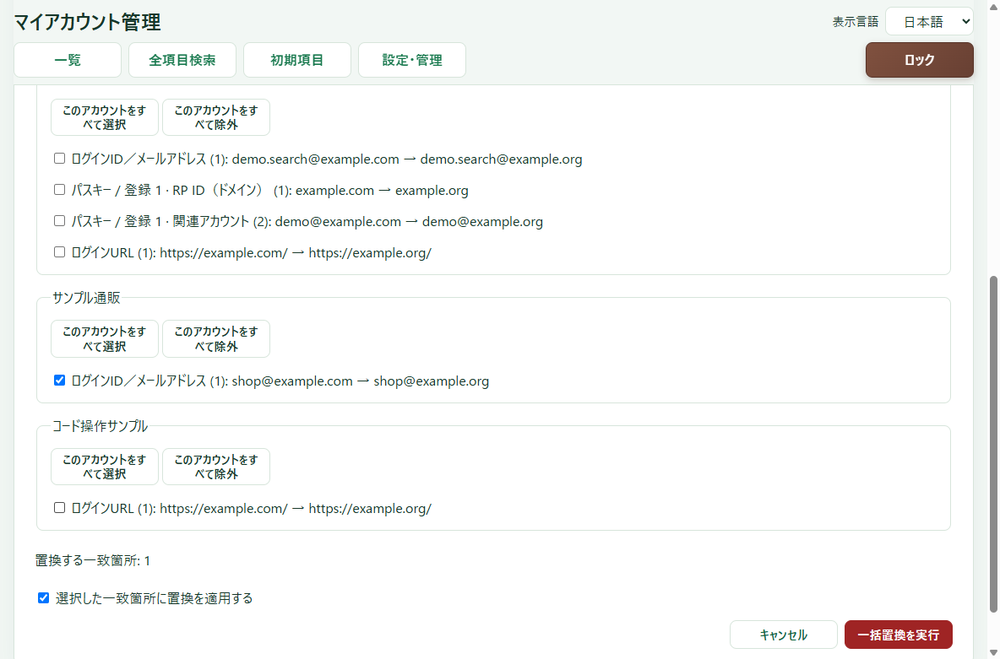
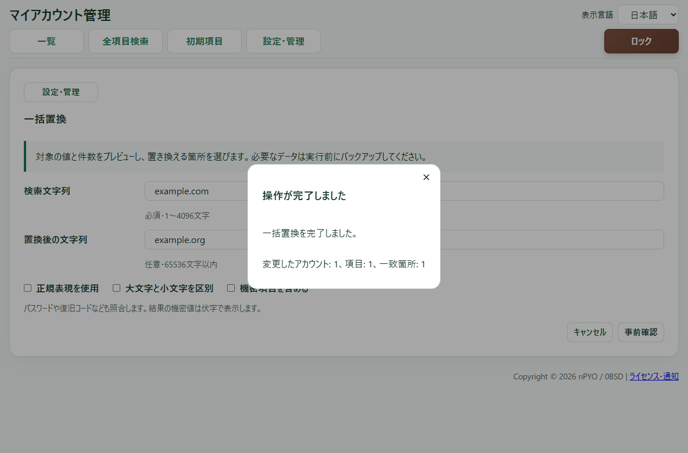
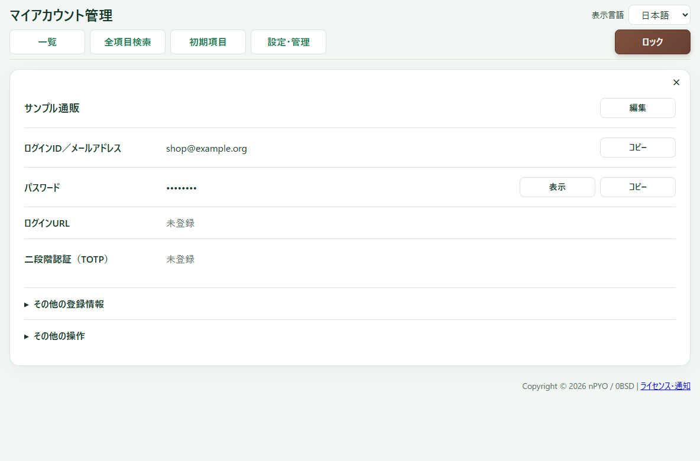

34一括置換
変更箇所をプレビューで絞り、選択した一致だけをまとめて置換します。
1一括置換を開く
［設定・管理］から［一括置換］を開きます。必要なデータは先にバックアップします。

2置換条件を入力する
例では example.com → example.org。正規表現・大小文字の区別・機密項目をすべてオフにして［事前確認］を押します。

3対象件数を確認する
例では3アカウント・5項目・6一致が候補です。この時点では保存値は変わりません。

4変更前後を読む
下へスクロールし、各チェック欄の変更前 → 変更後を確認します。

5アカウント単位で除外する
例ではサンプルメールの［このアカウントをすべて除外］を押し、残りを2一致にします。

6個別の一致を除外する
コード操作サンプルのURLのチェックを外します。通販のログインIDだけが残り、置換する一致箇所は1です。

7選択箇所への適用を確認する
内容を確認し［選択した一致箇所に置換を適用する］をチェックして［一括置換を実行］を押します。

8変更件数を確認する
完了画面で変更したアカウント・項目・一致箇所がすべて1であることを確認します。

9実際の保存値を確認する
完了画面を閉じ、一覧から対象の詳細を開きます。ログインIDが shop@example.org に変わっています。
